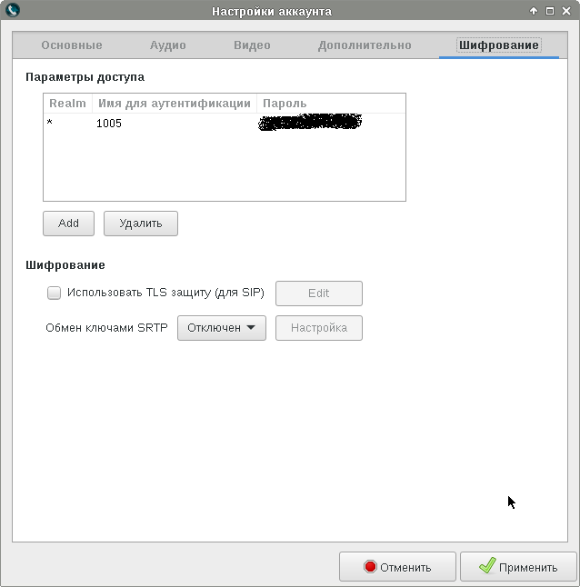
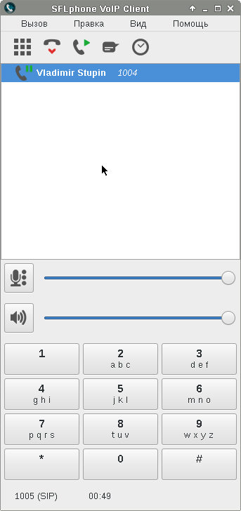

Итак, как я и обещал, в этой заметке я сделаю краткий обзор программного телефона SFLphone, который привлёк моё внимание в качестве программы, пригодной для секретарей, диспетчеров и операторов, т.к. умеет работать с несколькими звонками одновременно и соединять абонентов между собой.
Программа имеет несколько разных интерфейсов и разбита на несколько пакетов:
$ apt-cache search sflphone sflphone-daemon - SIP and IAX2 compatible VoIP phone - core daemon sflphone-data - SIP and IAX2 compatible VoIP phone - common data sflphone-evolution - SIP and IAX2 compatible VoIP phone - Evolution plugin sflphone-gnome - SIP and IAX2 compatible VoIP phone - GNOME client sflphone-kde - SIP and IAX2 compatible VoIP phone - KDE client
Как видно, имеются варианты интерфейсов для рабочих сред KDE и GNOME, а также плагин для почтового клиента Evolution. Ещё два пакета содержат демон и данные для программы. Демон на самом деле и является программным телефоном: внутри него происходит работа с устройствами компьютера и сетью. Интерфейс программы взаимодействует с демоном через DBUS и занимается лишь передачей команд в демон и отображением его состояния. В этой заметке я рассмотрю только интерфейс для среди GNOME. Установим в систему соответствующий пакет:
# apt-get install sflphone-gnome
Общий вид программы:
Под меню видно имеется окно со списком текущих разговоров, ниже - регуляторы громкости для микрофона и наушников, ещё ниже - номеронабиратель. Справочник контактов спрятан в отдельное окно, что мне показалось несколько неудобным.
Чтобы попасть в настройки программы, нужно выбрать пункт меню "Правка", а в раскрывшемся списке выбрать пункт "Настройки":
Из всех имеющихся настроек особенный интерес представляют настройки звука:
Здесь можно выбрать аудиоустройства, которые будут использоваться для озвучивания поступившего звонка, для озвучивания речи собеседника, а также микрофон, который будет использоваться для отправки речи собеседнику.
Второй интересный пункт, это выбор видеоустройств:
К сожалению, совершить видеозвонок с использованием этого программного телефона мне не удалось. Но это, наверное, не столь важно для рабочего места секретаря.
Чтобы настроить учётные записи, нужно в основном окне программы выбрать пункт "Правка", а в раскрывшемся списке выбрать пункт "Аккаунты":
После этого откроется список учётных записей:

Здесь имеется отдельная учётная запись под названием "IP2IP". В ней хранятся настройки, которые будут использоваться для прямых вызовов, без использования какой-либо учётной записи. Можно добавлять, удалять и редактировать учётные записи, а также временно отключать их, снимая галочку.
Во вкладке редактирования основных настроек учётной записи можно указать имя пользователя, пароль, адрес сервера или SIP-прокси и псевдоним, который будет отображаться в списке учётных записей и на программных телефонах других абонентов:
Во вкладке аудионастроек можно выбрать используемые кодеки, их приоритеты, звук входящего звонка и режим передачи тоновых сигналов:
Во вкладке видеонастроек аналогично, можно выбрать используемые кодеки и их приоритеты, а также включить или выключить использование видео:
Ещё раз скажу, что совершить видеозвонок при использовании этой программы мне не удалось.
Во вкладке дополнительных настроек можно указать номер используемого UDP-порта, внешний IP-адрес и указать STUN-сервер:
В отличие от Ekiga, тут все настройки легко доступны и их можно настраивать для каждой учётной записи отдельно.
В последней вкладке можно указать настройки шифрования для сеансов SIP и для трафика RTP:
Я ни то ни другое настраивать пока не пробовал.
Теперь перейдём к самому интересному - к соединению абонентов друг с другом.
Вот так входящий звонок отображается в правом верхнем углу экрана:
Принят звонок можно щелчком по этому всплывающему окну.
Тот же звонок отображается в списке разговоров. Взять трубку можно либо нажатием на пиктограмму с телефонной трубкой и зелёной стрелкой, либо через меню "Вызов", либо сочетанием горячих клавиш, либо через контекстное меню, как это показано ниже:
Предположим, что в процессе разговора выясняется, что звонящего нужно переключить на специалиста, который более компетентен в обсуждаемом вопросе.
Ставим входящий звонок на паузу:
Опять же - поставить на паузу можно сочетанием горячих клавиш, либо через меню "Вызов".
Стоящий в очереди звонок отображается следующим образом:
При этом телефонная станция воспроизводит ожидающему абоненту музыку.
Пока звонок стоит в очереди, совершаем исходящий звонок:

Этот же исходящий звонок будет отображаться всплывающей надписью в правом верхнем углу экрана:
Дозвонившись до специалиста, объясняем ему суть вопроса, который обсуждался с ожидающим абонентом и предлагаем им поговорить друг с другом.
Соединение абонентов друг с другом:
После соединения абонентов друг с другом, оба звонка исчезают из списка в программе и продолжают общаться между собой уже без нашего участия.
Как вы заметили, кроме передачи звонка другому абоненту, имеется ещё возможность создать конференцию. Во отличие от соединения двух абонентов между собой, когда соединённые звонки пропадают из списка, конференция остаётся в списке. Конференция поддерживается самим демоном sflphone, при этом не используются функции конференций Asterisk. Выглядит конференция следующим образом:
Управляет конференцией абонент, использующий sflphone. Он может поставить конференцию на паузу, в таком случае все абоненты будут находиться в режиме ожидания и слушать музыку. Когда от конференции отключается абонент sflphone, конференция уничтожается, а все другие абоненты отключаются от неё.
В процессе использования перенаправлений звонков обнаружил, что телефонные шлюзы Cisco ATA 186 не поддерживают функцию REINVITE, которая позволяет абоненту с другой стороны попросить согласовать параметры звука с другим абонентом. Именно эта опция используется для перенаправления звонков. На случай подобных телефонных шлюзов в Asterisk имеется опция canreinvite. Чтобы указать, что телефонный шлюз не умеет переключаться на другого абонента, нужно указать в настройках SIP-пользователя опцию canreinvite=no. В этом случае Asterisk будет выступать посредником при трансляции звука. При установлении первого сеанса звук от обоих абонентов будет проходить через Asterisk. Когда нужно будет выполнить переключение, Aterisk самостоятельно выполнит REINVITE с одним из абонентов, продолжая трансляцию звука через себя для другого абонента, который не поддерживает REINVITE.